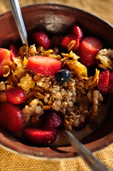

La importancia de la alimentaión sobre nuestra piel
La piel también se nutre desde dentro, y una inadecuada alimentación se va a reflejar en el estado de la misma, por eso es importante comer siempre bien.
Nuestra piel es un órgano interconectado con todo el cuerpo. Un organismo bien nutrido va a evidenciar un estado saludable de la piel. Ingerir cantidades óptimas de nutrientes esenciales y antioxidantes ayuda a prevenir el envejecimiento pematuro y enfermedades.
A veces le damos más importancia a cuidar nuestra piel de manera externa y nos olvidamos de nutrirla
y cuidarla desde adentro.
El cuidado de la misma debe complementar los tratamientos externos con la asimilación de nutrientes a través
de la alimentación, para así conseguir una dermis más sana.
Además de la alimentación, es necesario cuidar otros aspectos que forman parte de hábitos de vida saludable,
como la actividad fisica y el descanso.
El realizar ejercicio constante promueve un correcto estado de salud de la piel, como así también los hace el descanso.
Nunca es tarde para comenzar a nutrir la piel correctamente y generar una rutina de hábitos saludables.